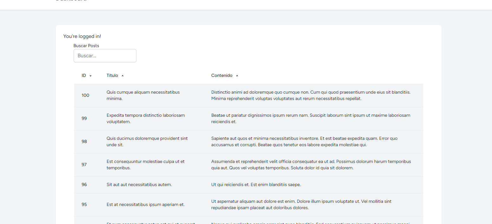

Esta directiva HTML de Livewire sirve para sincronizar en tiempo real el contenido que el usuario escribe en un input del componente, con el valor de un atributo de la clase del componente.
Por ejemplo, si definimos el atributo $search en la Clase del componente, podemos sincronizar su valor en tiempo real agregando esta directiva a un input que se encuentre en la vista del componente:
wire:model.live="search"
De esta manera cada vez que el usuario escriba una letra en el lado del cliente, se enviará una petición que actualizará el valor de $search en el lado del servidor.
Con la directiva HTML wire:model.live de Livewire podemos crear un buscador de forma superfacil. Simplemente agregamos un filtro a la consulta usando el valor de la propiedad $search:
Así de facil con Livewire, ¡Ahora tenemos un buscador en tiempo real!
Esta directiva HTML de Livewire sirve para ejecutar un metodo de la Clase del componente cuando el usuario hace un click en un elemento y, despues de la ejecución, volver a renderizar el componente.
Recibe un metodo de la Clase del componente y, en el caso de que este metodo reciba parametros, estos se pasan por aquí igualmente:
wire:click="method('param1_value', 'param2_value' ... , 'paramN_value')"
Simplemente con dos atributos ($sort y $direction) y dos metodos en la Clase del componente, además de algunas modificaciones en la vista, podemos construir facilmente un ordenador. Primero agregamos los dos atributos a la Clase del componente:
public $sort = 'id',
public $direction = 'asc';
A continuación debemos agregar un metodo, en este caso order(), que controle el valor de estos atributos cuando el usuario interactua con la vista del componente:
Finalmente en la vista, a parte de estilizarla con los iconos de ordenamiento, debemos agregar la directiva HTML wire:click de Livewire a cada encabezado de la tabla.
Le indicamos que ejecute el método order(), y a este metodo le pasamos el nombre de la columna para que el servidor pueda saber cúal es la columna en la que debe basarse para ordenar los registros.
wire:click="order('column_name')"
Hecho esto, lo que resta es utilizar los atributos $sort y $direction para ingeniosamente mostrar los iconos corectamente según sea la nesecidad.
El resultado es que ahora podemos ordenar los registros con un click en la columna, y además, en ambos sentidos:
